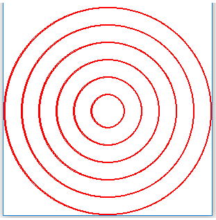

Израда цртежа помоћу петљи¶
Размотримо следећи задатак: нека је потребно нацртати 6 кругова, као на овој слици:
{kind=link}
Гледајући у слику можемо да претпоставимо (а могло је да буде и речено у поставци) да су кругови једнако размакнути. Ово значи да је разлика полупречника свака два суседна круга иста.
Величину кругова бирамо тако да буду што већи, али да могу да стану у дати простор за цртање од 300x300 пиксела. Пошто је ширина прозора 300 пиксела, полупречник највећег круга је 150. Као разлику полупречника два суседна круга можемо да узмемо \({150 \over 6} = 25\). Тако добијамо полупречнике 25, 50, 75, 100, 125, 150.
На основу израчунатих вредности, могли бисмо да напишемо овакав програм:
Замислимо да смо после овога добили нови задатак да направимо исти такав цртеж, али са 5 кругова. Ово је врло мала промена, зар не? Требало би да можемо да искористимо нешто од претходно решеног задатка.
Када започнемо рад на цртежу од 5 кругова, видимо да врло мало од претходног програма можемо да искористимо. У ствари, можемо да искористимо само идеју, а величине кругова треба да израчунамо испочетка.
Да смо програм писали другачије, прилагођавање би било много једноставније. Могли смо на пример да број кругова упишемо у променљиву, а затим да у свим потребним рачунањима користимо ту промељиву. Тај програм би изгледао овако:
У овом програму је довољно да се измени само један број, па да он црта било који задати број кругова.
Код многих цртежа постоји нека правилност, као што је симетрија или неки део који се понавља (и многе друге, сложеније правилности). Ако схватимо правилност на таквим цртежима и изразимо је математички, моћи ћемо да је искористимо при писању програма за цртање таквих цртежа, као што смо урадили у претходном примеру. На тај начин добијамо програм који је много лакше изменити да би се добио неки други, сличан цртеж. Код цртежа са великим бројем понављања неког дела (истоветног или мало измењеног), програм који користи правилност ће бити и доста краћи.
Многи програми које користе милиони људи се стално усавршавају и дорађују. Стално се објављују нове верзије у којима је нешто урађено боље. Према томе, измене програма су нешто потпуно нормално и нешто што се стално дешава. Ситуација је слична и са програмима које сами пишемо. Када напишемо неки програм, лако може да се догоди да се касније сетимо нечега, због чега ћемо хтети да изменимо део програма који је већ написан.
Зато, када пишемо програме, треба да имамо на уму могућност да ће неко (могуће и ми сами) хтети да направи неки сличан програм и да ће можда желети да употреби наш програм као почетну верзију.
Погледајмо још један пример како можемо да искористимо правилности на цртежу за писање флексибилнијег програма (програма који је лакше прилагодити мало другачијој намени).
Пример - антена¶
Раније смо већ имали програм који црта овакву антену. Сада је програм написан тако да није сувише тешко изменити број попречних сегмената, размак између њих, разлику дужина узастопних сегмената и слично.
Део програма који црта попречне сегменте антене је могао да буде написан и овако:
for i in range(6):
pg.draw.line(prozor, pg.Color('darkgray'), (120 - 10 * i, 75 + 25 * i), (180 + 10 * i, 75 + 25 * i), 1 + i//2)
Овако написан програм би био нешто краћи, али први је јаснији, тако да сваки има своје предности. Истакнимо само да су оба ова програма боља од директног цртања 6 линија за попречне сегменте (као што смо то радили раије). Када би се овај део програма састојао од шест позива функције за цртање линије, било би теже изменити и прилагодити програм цртању другачије антене.
Правилно распоређени бројеви¶
У оба претходна примера било је потребно да набројимо неки низ или низове правилно распоређених бројева. У задатку са круговима то су били бројеви 25, 50, 75, 100, 125, 150 (полупречници кругова), а у задатку са антеном биле су нам потребне чак четири серије бројева - x и y координате левих и десних крајева попречних сегмената антене. Конкретно, ти бројеви су:
x координате левих крајева: 120, 110, 100, 90, 80, 70
y координате левих крајева: 75, 100, 125, 150, 175, 200
x координате десних крајева: 180, 190, 200, 210, 220, 230
y координате десних крајева: 75, 100, 125, 150, 175, 200
Видели смо да постоје различити начини да добијемо потребне вредности. На пример, у задатку са концентричним круговима, вредности 25, 50, 75, 100, 125, 150 могли смо да добијемо на било који од следећих (једнако добрих) начина:
for r in range(25, 151, 25):
pg.draw.circle(prozor, pg.Color("red"), centar, r, 2)
for i in range(br_krugova):
pg.draw.circle(prozor, pg.Color("red"), centar, round(25 + i * 25), 2)
r = 25
for _ in range(br_krugova):
pg.draw.circle(prozor, pg.Color("red"), centar, r, 2)
r += 25
У општем случају, ако треба добити серију вредности a, a+d, a+2d, … a+(n-1)d, претходна три начина можемо да користимо овако:
for x in range(a, a + n*d, d):
print(x)
for i in range(n):
print(a+i*d)
x = a
for _ in range(n):
print(x)
x += d
Видећемо да се велики број задатака са цртањем правилно распоређених облика може решити применом оваквих петљи.
Нагласимо још и да функција range са кораком (са три аргумента) прима обавезно целобројне аргументе, па у ситуацијама када корак није
целобројан њено коришћење није могуће.
Када нам је потребно (као у задатку са антеном) да направимо неколико серија у једној петљи, први начин је мање погодан, па треба бирати неки од осталих начина.
Следећа питања ће вам помоћи да утврдите знање о формирању серија правилно распоређених бројева.
-
Упари низ бројева са петљом која га генерише.
Покушај поново!
- 100, 200, 300, 400, 500
- for i in range(100, 600, 100)
- 100, 300, 500
- for i in range(100, 601, 200)
- 100, 200, 300, 400, 500, 600
- for i in range(100, 601, 100)
- 200, 300, 400, 500, 600
- for i in range(200, 601, 100)
-
Упари бројеве који се добијају са изразом у петљи "for i in range(5):" који их генерише.
Покушај поново!
- 100, 150, 200, 250, 300
- x = 100 + i*50
- 50, 150, 250, 350, 450
- x = 50 + i*100
- 0, 100, 200, 300, 400
- x = i*100
- 100, 200, 300, 400, 500
- x = 100+i*100
- x = 25 * i + 50
- Не.
- x = (25 + i) * 50
- Не.
- x = 25 * 2*i+1
- Не.
- x = 25 + 50 * i
- Тачно!
Q-106: Који израз треба користити у петљи
for i in range(19):
x = ???
...
да би x имало исте вредности као у петљи
for x in range(25, 500, 50):
...
Следе задаци за вежбу.
Мердевине¶
Измените програм тако да се пречаге мердевина цртају у петљи.
Уместо 5 наредби за цртање линија, можете да употребите петљу следећег облика:
for y in ???:
pg.draw.line(prozor, pg.Color("brown"), (100, y), (200, y), 10)
Да бисте на прави начин комплетирали петљу, треба да одговорите на следеће питање:
- range(0, 50, 250)
- Не, за тај опсег први број није одговарајући.
- range(250, 50)
- Не, покушајте поново.
- range(50, 251, 50)
- Тачно!
- range(50, 250, 50)
- Не, за тај опсег последњи број није одговарајући.
Q-107: Који од понуђених опсега даје вредности 50, 100, 150, 200, 250?
Дрвеће¶
Измените програм тако да се у три проласка кроз петљу црта по једно дрво.
Програм може да изгледа овако:
при чему уместо упитника треба ставити одговарајуће изразе за x координату. Када i узима редом вредности 0, 1, 2, потребно је да израз у првој наредби узима редом вредности 40, 140, 240, а у другој 10, 110, 210.
Решетка¶
Измените програм тако да се у једној петљи исртавају усправне линије, а након тога у другој петљи водоравне линије.